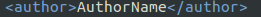
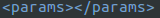
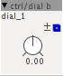
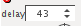
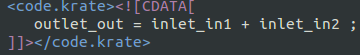
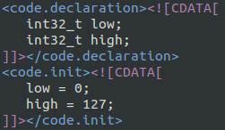

Objects 101
Object/XML overview
An object in Axoloti is an .axo file, which stores the object definition (like the name, a unique ID, inlets & outlets ) and some code.
XML
The code and object definitions are combined as an XML file and therefore every XML tag needs to be closed properly in order to function correctly.
XML tag with content: 
Empty XML tag:
Note that tags can not be left empty like this: 
Some tags may be left out, but some are mandatory.
An XML tag can have attributes . Some of the (mandatory) attributes used in Axoloti objects are id, uuid and sha , and in the inlets and outlets sections you'll find things like name and description,
In XML the content (= data between tags) can not contain certain characters, these are: " ' < > &
The work-around for this is to use CDATA formatting, which means that the data in between these tags is content , and not part of a tag.
Object Skeleton
This is a definition of a empty Axoloti object:
<objdefs>
<obj.normal
id="uniqueID"
uuid="2ae01ff03753539d9028888689654235fa199936"
sha="ae685c109e202b4739b3022d59a891becf60f349">
<upgradeSha>26b0e9ebf07d4a6d8f04db3682899c48c85cc389</upgradeSha>
<sDescription>Some description</sDescription>
<author>AuthorName</author>
<license>LicenceType</license>
<helpPatch>helpfile.axh</helpPatch>
<inlets/>
<outlets/>
<displays/>
<params/>
<attribs/>
<includes/>
<code.declaration><![CDATA[
]]></code.declaration>
<code.init><![CDATA[
]]></code.init>
<code.krate><![CDATA[
]]></code.krate>
<code.srate><![CDATA[
]]></code.srate>
<code.midihander><![CDATA[
]]></code.midihander>
</obj.normal>
</objdefs>id: a unique name for your object.
uuid , sha : a unique ID (SHA1) . If the ID already exists , or when it has not the correct value, Axoloti will suggest the correct value when reloading the objects (File > Reload Objects).
inlets , outlets simply define the inputs and outputs of your object.
<inlets>
<frac32 name="in" decription="in" />
</inlets>
<outlets>
<frac32 name="out" decription="out" />
</outlets>Inlets and outlets have a name, can have a description and have a numeric type (tagname).
Parameters
<params>
<frac32.s.map name="value"/>
</params>generates this dial:

Some parameter types employ a "pfunction", to scale/map/warp a linear parameter space into a range (-64...64) that can be more directly used by the dsp function.
All parameters result in a 32 bit type.
Displays
The definitions in the Displays section will show up as data visualizers in the GUI, only reading back from patch to GUI. The value of a Display element can not be changed by the GUI.
<displays>
<frac32.s.dial name="v" noLabel="true">
</displays>attribs
The definitions in the Attributes section are used to define constant values or strings (like table name )
Attributes are known at compile time.
<attribs>
<spinner name="delay" MinValue="1" MaxValue="10000" DefaultValue="100"/>
</attribs>results in :

In the code section the attribute can be used by adding the prefix attr_ , so in this example that would be attr_delay
Types
int32
bool32
frac32
frac32buffer
[...]
Code Sections
This is where the actual code lives.
There are three code sections :
code.krate : control rate, 3000Hz
code.srate : audio rate , 48000Hz
code.midihandler
Code sections can be used together, or left out
Sample rates are defined in the firmware app/firmware/axoloti_defines.h
The sample rate is defined by the macro SAMPLERATE.
The number of audio samples corresponding to one control rate sample is defined by the macro BUFSIZE , so a buffersize 16 results a krate of 48000/16 = 3000.
This example code simply adds the value of in2 to in1 , and send it to out (3000 times per second):

Note that the names are prefixed with inlet_ and outlet_ , this means they were defined in the outlet/inlet section of the XML.
If you look at existing objects, you'll notice a lot of operators. If you're not familiar with C syntax, this list might be useful: C operators
declaration , init
Sometimes the values used in the code need to be declared and initialized.
This is where the code.declaration and code.init sections are for.

This is code is only executed once, when the program starts.
Next:
102 creating a first object